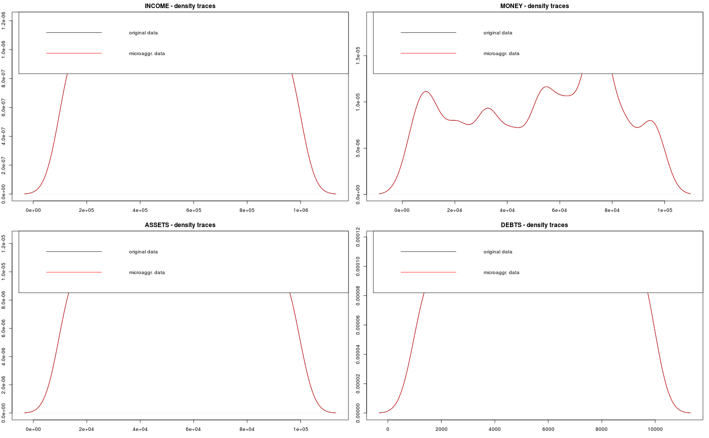

R/plotMicro.R
Plots for the comparison of the original data and perturbed data.
plotMicro(x, p, which.plot = 1:3)
| x | object from class micro |
|---|---|
| p | necessary parameter for the box cox transformation (lambda) |
| which.plot | which plot should be created?
|
Univariate and multivariate comparison plots are implemented to detect differences between the perturbed and the original data, but also to compare perturbed data which are produced by different methods.
Templ, M. and Meindl, B., Software Development for SDC in R, Lecture Notes in Computer Science, Privacy in Statistical Databases, vol. 4302, pp. 347-359, 2006.
data(free1) free1 <- as.data.frame(free1) m1 <- microaggregation(free1[, 31:34], method="onedims", aggr=3) m2 <- microaggregation(free1[, 31:34], method="pca", aggr=3) plotMicro(m1, p=1, which.plot=1)